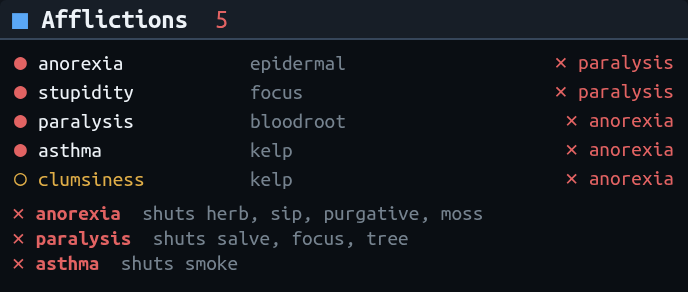

Client-side curing
Every affliction cured on the right balance, the moment that balance is back.
Achaea's server-side curing stays off. Emunah reads your afflictions from GMCP, chooses the cure each balance should spend, and sends it on the prompt it becomes possible. The rankings are the reference system's, refined by rules learnt in real fights, and you can read and change every one.
- Every balance at once. Herb, salve, sip, purgative, smoke, focus, moss and tree each choose their own cure, so a salve never waits behind a herb.
- Locks cured around, not into. Anorexia, slickness, asthma, impatience and paralysis shut whole routes. Emunah cures through the one still open, and in the moments before a lock closes it cures the affliction that keeps an escape route open.
- Dangers named. The prompt names the lock you are in, and any instant kill you are open to: an Alchemist's reave, dismemberment, a pulp or a golem.
- Illusions ignored. Text reports wait for the prompt, one illusion discards the whole block, and a gained affliction is dropped unless the server confirms it.

Drawn by Emunah's own panel code mid-lock. Three afflictions shut every curing balance between them, and each row shows which one its cure is waiting on.